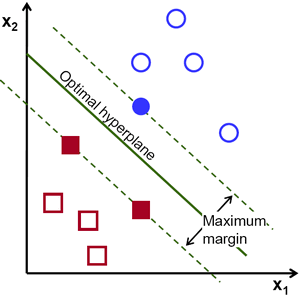
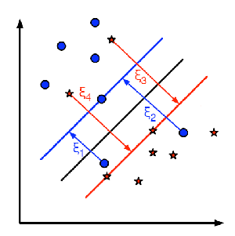

Understanding SVM
Goal
In this chapter
- We will see an intuitive understanding of SVM
Theory
Linearly Separable Data
Consider the image below which has two types of data, red and blue. In kNN, for a test data, we used to measure its distance to all the training samples and take the one with minimum distance. It takes plenty of time to measure all the distances and plenty of memory to store all the training-samples. But considering the data given in image, should we need that much?

Consider another idea. We find a line, \(f(x)=ax_1+bx_2+c\) which divides both the data to two regions. When we get a new test_data \(X\), just substitute it in \(f(x)\). If \(f(X) > 0\), it belongs to blue group, else it belongs to red group. We can call this line as Decision Boundary. It is very simple and memory-efficient. Such data which can be divided into two with a straight line (or hyperplanes in higher dimensions) is called Linear Separable.
So in above image, you can see plenty of such lines are possible. Which one we will take? Very intuitively we can say that the line should be passing as far as possible from all the points. Why? Because there can be noise in the incoming data. This data should not affect the classification accuracy. So taking a farthest line will provide more immunity against noise. So what SVM does is to find a straight line (or hyperplane) with largest minimum distance to the training samples. See the bold line in below image passing through the center.
So to find this Decision Boundary, you need training data. Do you need all? NO. Just the ones which are close to the opposite group are sufficient. In our image, they are the one blue filled circle and two red filled squares. We can call them Support Vectors and the lines passing through them are called Support Planes. They are adequate for finding our decision boundary. We need not worry about all the data. It helps in data reduction.
What happened is, first two hyperplanes are found which best represents the data. For eg, blue data is represented by \(w^Tx+b_0 > 1\) while red data is represented by \(w^Tx+b_0 < -1\) where \(w\) is weight vector (\(w=[w_1, w_2,..., w_n]\)) and \(x\) is the feature vector (\(x = [x_1,x_2,..., x_n]\)). \(b_0\) is the bias. Weight vector decides the orientation of decision boundary while bias point decides its location. Now decision boundary is defined to be midway between these hyperplanes, so expressed as \(w^Tx+b_0 = 0\). The minimum distance from support vector to the decision boundary is given by, \(distance_{support \, vectors}=\frac{1}{||w||}\). Margin is twice this distance, and we need to maximize this margin. i.e. we need to minimize a new function \(L(w, b_0)\) with some constraints which can expressed below:
where \(t_i\) is the label of each class, \(t_i \in [-1,1]\).
Non-Linearly Separable Data
Consider some data which can’t be divided into two with a straight line. For example, consider an one-dimensional data where ‘X’ is at -3 & +3 and ‘O’ is at -1 & +1. Clearly it is not linearly separable. But there are methods to solve these kinds of problems. If we can map this data set with a function, \(f(x) = x^2\), we get ‘X’ at 9 and ‘O’ at 1 which are linear separable.
Otherwise we can convert this one-dimensional to two-dimensional data. We can use \(f(x)=(x,x^2)\) function to map this data. Then ‘X’ becomes (-3,9) and (3,9) while ‘O’ becomes (-1,1) and (1,1). This is also linear separable. In short, chance is more for a non-linear separable data in lower-dimensional space to become linear separable in higher-dimensional space.
In general, it is possible to map points in a d-dimensional space to some D-dimensional space \((D>d)\) to check the possibility of linear separability. There is an idea which helps to compute the dot product in the high-dimensional (kernel) space by performing computations in the low-dimensional input (feature) space. We can illustrate with following example.
Consider two points in two-dimensional space, \(p=(p_1,p_2)\) and \(q=(q_1,q_2)\). Let \(\phi\) be a mapping function which maps a two-dimensional point to three-dimensional space as follows:
Let us define a kernel function \(K(p,q)\) which does a dot product between two points, shown below:
It means, a dot product in three-dimensional space can be achieved using squared dot product in two-dimensional space. This can be applied to higher dimensional space. So we can calculate higher dimensional features from lower dimensions itself. Once we map them, we get a higher dimensional space.
In addition to all these concepts, there comes the problem of misclassification. So just finding decision boundary with maximum margin is not sufficient. We need to consider the problem of misclassification errors also. Sometimes, it may be possible to find a decision boundary with less margin, but with reduced misclassification. Anyway we need to modify our model such that it should find decision boundary with maximum margin, but with less misclassification. The minimization criteria is modified as:
Below image shows this concept. For each sample of the training data a new parameter \(\xi_i\) is defined. It is the distance from its corresponding training sample to their correct decision region. For those who are not misclassified, they fall on their corresponding support planes, so their distance is zero.
So the new optimization problem is :
How should the parameter C be chosen? It is obvious that the answer to this question depends on how the training data is distributed. Although there is no general answer, it is useful to take into account these rules:
- Large values of C give solutions with less misclassification errors but a smaller margin. Consider that in this case it is expensive to make misclassification errors. Since the aim of the optimization is to minimize the argument, few misclassifications errors are allowed.
- Small values of C give solutions with bigger margin and more classification errors. In this case the minimization does not consider that much the term of the sum so it focuses more on finding a hyperplane with big margin.
Additional Resources
Exercises